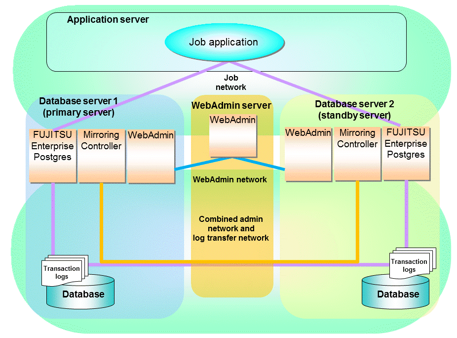

This chapter describes how to set up and manage Mirroring Controller in a streaming replication cluster using WebAdmin.
Mirroring Controller can be used to monitor a streaming replication cluster and perform automatic switching or disconnect synchronous replication when there is an error.
WebAdmin can be used to set up Mirroring Controller in an existing replication cluster. Mirroring Controller can be set up for either synchronous standby instances or asynchronous standby instances.
The configuration of the database multiplexing system built using WebAdmin is shown below:
Figure 5.1 Configuration of database multiplexing operation system using WebAdmin

Point
If Mirroring Controller is set up to the replication cluster using WebAdmin, the network with the host name (or IP address) specified in [Host name] will be used as the admin network and the log transfer network.
To use a network other than the job network as the log transfer network, before building the replication cluster specify a host name other than the job network one in [Host name].
Note
If you set up the arbitration server using WebAdmin, install WebAdmin on the arbitration server.